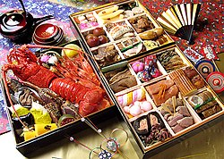

日本料理
日本料理泛指日本的飲食方式，又稱和食、日餐（日語：和食／わしょく Washoku ?；此名稱更側重於大和民族的飲食），
是日本文化重要的一環。「日本料理」在日語解作「日本式烹飪」，但是此詞語也在部分地區的現代漢語中用以代表日本菜。
日本料理是日本人日常的傳統飲食，特別是在江戶時代和明治時代（19世紀末至20世紀初）所形成的飲食文化和習慣，
這是因為東西方食材交融所產生的衝擊，雖然日本原本食材就足夠豐富了、
但是日本還是喜歡不斷把新的外國料理加入本國特色融合成日本專屬的美味菜餚。

第2頁
第3頁
第4頁
第5頁